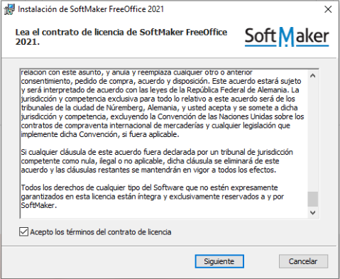

FreeOffice es una suite ofimática bastante completa que consta de softwares de procesamiento de textos, hojas de cálculo y presentaciones. Free Office es totalmente compatible con Microsoft Office y lo tenemos disponible tanto como para Windows y Linux. También está para Mac pero en este caso no veremos la instalación para dicho sistema operativo. Lo mejor de Free Office es que lo tenemos completamente gratuito y podemos usarlo en un ámbito profesional y personal sin tener repercusiones algunas.
Para proceder con la instalación del programa en nuestro sistema operativo Windows o Ubuntu lo primero que necesitamos es nuestro programa de FreeOffice que vamos a instalar, para ello, entraremos en la página web haciendo click sobre FreeOffice que te va a dirigir a la página web de descarga del programa de instalación rápidamente.
Para proceder con la instalación del programa en nuestro sistema operativo Windows lo primero que necesitamos es nuestro programa de FreeOffice que vamos a instalar, para ello, entraremos en la página web haciendo click sobre FreeOffice que te va a dirigir a la página web de descarga del programa de instalación rápidamente.
Una vez hayamos descargado el programa que vamos a instalar lo ejecutaremos como administrador y esperaremos a que se nos abra la siguiente ventana para seguir con la instalación.
Una vez nos haya salido esta ventana, y tenemos claro que queremos instalar este programa haremos click sobre la opción "Siguiente" que nos aparece en la parte inferior de la ventana, una vez le demos click nos debería de aparecer otra ventana diferente para seguir adelante con el proceso de instalación.
En esta ventana tenemos los términos del programa, los cuales tendremos que aceptar si queremos hacer click en siguiente para continuar con la instalación. Ciertamente, nadie se lee los términos cuando vamos a instalar un programa, sin embargo, es algo que deberíamos tener en cuenta para cualquier tipo de programa que vayamos a instalar debido a las consecuencias que puede traer un mal uso, por lo tanto, te recomiendo leer dichos términos, una vez leídos, aceptarlos y continuar con el proceso de instalación.
Esta será la última ventana que vamos a ver, es decir, una vez hayamos elegido que opción escoger y le demos a comenzar la instalación, terminará y ya tendremos el o los programas instalados, dependiendo de las opciones que hayamos escogido.
En el primer caso, tenemos la opción de Instalar la cual nos instalará todos los programas que vienen dentro del paquete ofimático, sin embargo, si solo queremos un cierto programa como es el procesador de textos podemos decirle que nos instale únicamente ese. Para ello entraremos en la opción de personalizada y marcaremos que solo nos instale el procesador de textos. Una vez marcada la opción le diremos que proceda a instalarlo. Aquí ya solo nos quedará esperar hasta tener el o los programas instalados en nuestra máquina.